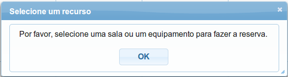

RESERVAS DE SALAS E EQUIPAMENTOS UFABC
MANUAL DO USUÁRIO
UNIVERSIDADE FEDERAL DO ABC
CMCC
CENTRO DE MATEMÁTICA, COMPUTAÇÃO E COGNIÇÃO
O aplicativo oferece um sistema de login integrado ao sistema da UFABC. Para acessá-lo, é necessário colocar seu nome de usuário e senha utilizados nos sistemas da UFABC (tidia, e-mail, biblioteca, entre outros). Apesar de ser integrado ao usuário da UFABC, o login garante que apenas usuários autorizados e cadastrados no Sistema de Reservas de sala possam utilizá-lo, servindo como uma segurança para o aplicativo.
Ao clicar na imagem será mostrado uma janela requisitando o login conforme Figura 3.1. Insira o login e clique no botão Login. Após a autenticação, deverá ser mostrado o Calendário de reservas, Figura 3.2.
A primeira vez que o aplicativo é instalado, sua base de dados está vazia sendo necessário criar as salas, equipamentos, docentes, TAs e usuários para gerenciar as reservas. Todo o gerenciamento destes dados pode ser feito na tela Gerenciar Dados, que aparece ao clicar no botão Gerenciar Dados, na tela do Calendário.
A Figura 3.3 mostra as opções disponíveis.
As três tarefas do gerenciamento de dados (criar, alterar e excluir) do Centro, Docente, TA, Salas e Equipamentos são bem similares para todos eles. Segue um exemplo do gerenciamento com docente.
Nas próximas seções será explicada detalhadamente a principal função desse sistema.
Com os docentes, salas e/ou equipamentos cadastrados é possível fazer as reservas. Na tela do calendário, selecione a
sala ou equipamento que deseja reservar. Após o clique deverá ser mostrado todas as reservas referentes à escolha feita,
isto é, caso haja alguma reserva feita.
Clique no dia que deseja fazer a reserva que será aberta uma janela com os informações necessárias como mostra a
Figura 3.7 .
Os três primeiros campos são obrigatórios para criação das reservas. Após preenche-los clique no botão “Salvar” para armazenar os dados no banco de dados 3.
Ao selecionar a reserva feita é aberta uma janela que permite editar os dados da reserva. Após a alteração dos dados, clique no botão “Atualizar” para gravar os dados no banco de dados.
Selecione, no calendário, uma reserva já feita que será aberta a opção de edição de dados da reserva. Clique no botão “Remover” para apagar a reserva.
O sistema permite que sejam feitas várias reservas ao mesmo tempo para o mesmo reservante, especificando os dias da semana que serão feitas as reservas e a data final da reserva, como na Figura 3.10.
Após a reserva ser feita o reservante deverá retirar a chave da sala ou o equipamento que reservou. Neste momento é preciso registrar o item que esta sendo levado pelo reservante, através da criação de um Empréstimo.
Clique na reserva feita para que seja aberta a janela de edição da reserva onde deve aparecer a opção de “Criar Empréstimo”, Figura 3.11.
Quando um empréstimo é criado é mostrado uma lista contendo todos os empréstimos. Esta lista também pode ser
acessada pela tela Gerenciar Dados, acessando o botão Empréstimo.
Quando o reservante vem devolver a chave da sala e/ou equipamento reservado e necessário acessar essa lista,
clicar no link Editar, para poder registrar a hora da devolução e a pessoa responsável pela recepção do(s)
item(s).
Toda vez que uma reserva é criada, um empréstimo é feito e um empréstimo é finalizado, o reservante recebe um email de notificação automaticamente.
Na tela do calendário existe um botão chamado “Todas as salas”. Ao clicar nele, são mostradas todas as reservas das salas ao mesmo tempo. Essa visualização permite que se tenha um visão geral de todas as salas reservas porém não permite editar as reservas feitas. Para poder editá-las é necessário selecionar a sala, lado esquerdo, que se deseja editar, onde será mostrado todas as reservas daquela sala em específico.
Assim como o botão para mostrar todas as salas reservadas simultaneamente, há um botão “Todos Equipamentos”, que mostra todas as reservas de equipamentos do mês que está sendo visualizado. Da mesma forma, não é possível editar as reservas feitas, é necessário clicar no equipamento que se deseja editar na barra lateral esquerda.
Para utilizar o sistema, não é suficiente apenas inserir o login e a senha utilizados na UFABC, também é necessário ser um usuário cadastrado no sistema. O sistema já possuirá um usuário inicial cadastrado, para que o login possa ser efetuado na primeira vez que o aplicativo for utilizado. Esse usuário será um usuário administrador, o que significa que ele tem permissão para cadastrar, editar e excluir outros usuários. Usuários que não são administradores não terão acesso à página de gerência de dados de usuários, mas terão acesso a todas as outras funcionalidades do Sistema de Reservas.
Caso o usuário seja um administrador do sistema, ele poderá cadastrar outros usuários, clicando em “Usuários” na tela de gerenciamento de dados. Depois, na área mostrada na Figura 3.12, deve escolher o nome do TA (previamente cadastrado) que será um usuário do sistema e clicar na caixa “Usuário Administrador”, caso aquele novo usuário deva ser um administrador também.
O sistema utiliza o nome do TA para acessar o nome de usuário do sistema de logins da UFABC. Caso o TA não tenha sido registrado com o mesmo nome presente no sistema da UFABC, o aplicativo de reservas não conseguirá ter acesso a esse login, e vai requisitar que o login seja inserido manualmente (esse login também deve ser o mesmo que é utilizado nos sistemas da UFABC). A Figura 3.13 ilustra a tentativa de cadastro de um usuário para a TA Wanessa. Porém, como o nome dela não foi registrado por completo, ocorrerá um erro no sistema e ele irá solicitar o preenchimento manual do login, como mostra a Figura 3.14.
O usuário deve então inserir o login correto (“Insira o login”) e clicar em (“Salvar”) para cadastrar o usuário, como mostra a Figura 3.15. Caso não queira cadastrar um usuário para o TA escolhido anteriormente, basta clicar em “Cancelar”.
O usuário será salvo e ficará disponível para ser editado ou apagado na lista de usuários, Figura 3.16.
Caso o login tenha sido inserido incorretamente no cadastro de um usuário, é possível editá-lo, clicando em “Editar” na lista de usuários. Além disso, é possível tornar um usuário administrador ou remover essa propriedade através da edição, Figura 3.17.
Para deletar um usuário, basta clicar em “Deletar” na lista de usuários.
Para realizar sair do sistema, clique em “Logout” no canto superior direito da tela, como na Figura 3.18.
Para a maioria dos erros que ocorrem durante a execução do programa existe uma mensagem com o motivo do erro. Em alguns casos será necessário uma intervenção do usuário.
Ao fazer o login, o sistema é liberado para uso. Se o browser ficar muito tempo “parado”, ou seja, sem nenhuma ação executada pelo usuário, o calendário não responderá mais sendo necessário fazer o login novamente. Se acontecer uma situação semelhante, atualize o browser (geralmente o botão F5 do teclado) para ser redirecionado à tela de login. Essa é uma medida de segurança para que outros usuários não acessem o sistema indevidamente que alguém deixou logado.
O sistema verifica se alguma reserva é feita na mesma data/hora e impede que isso aconteça. Uma mensagem de erro aparece na tela informando sobre o ocorrido, Figura 4.1.
Logo após o login, o sistema abre o calendário porém nenhum item foi selecionado para fazer reserva ainda. Caso o usuário clique em alguma data para para fazer a reserva sem antes especificar “o que” ele quer reservar, será mostrada uma mensagem na tela informando que ele deve selecionar alguma sala ou equipamento, Figura 4.2.

O sistema bloqueia reservas feitas em datas anteriores ao dia atual. Uma mensagem informando o ocorrido aparece na tela caso isso ocorra, Figura 4.3.
Todo docente e técnico administrativo possuem um número de identificação único, a matrícula. Caso esse
número seja igual ao de outro docente/TA, o sistema não permitirá o cadastro ou atualização do cadastro.
O mesmo pode